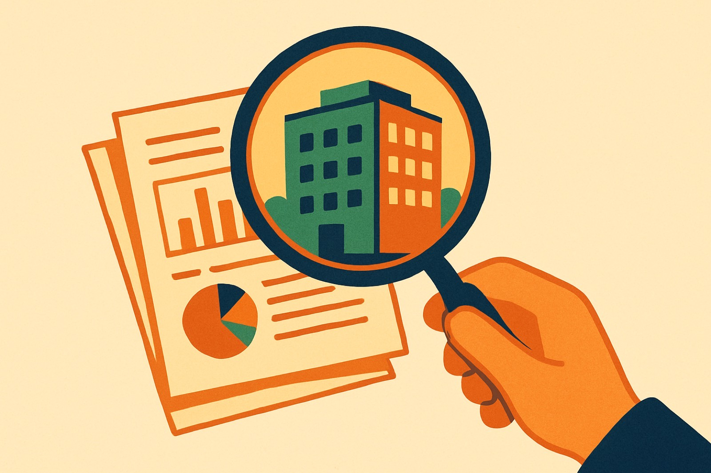
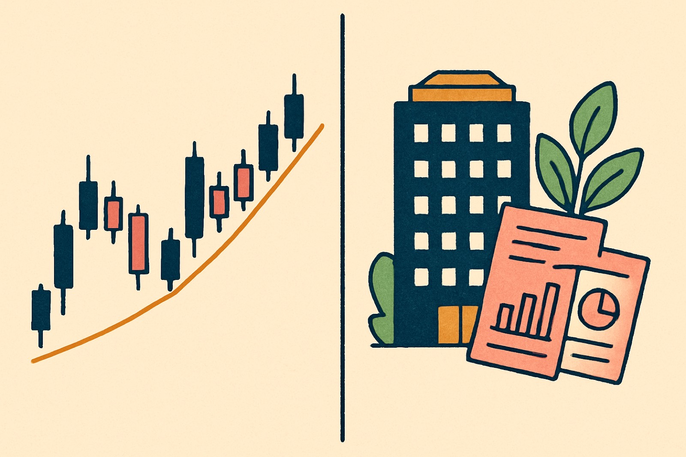

Behind every ticker is a real business with real products, customers, and revenue. Fundamental analysis asks whether it is actually a good one. In the next few minutes you'll learn to read a company the way an owner would.


Two toolkits. Different questions.
Price, patterns, and volume. It studies what buyers and sellers are doing right now, and where they might act next.
Financial statements, industry, and the wider economy. It estimates a company's intrinsic value and how fast it can grow.
Every public company reports its health three ways. Each one answers a different question about the business.
One shows profit. One shows position. One shows cash.
Revenue minus expenses gives net income. It tells you whether the company actually made money during the period.
A snapshot of assets on one side, liabilities and equity on the other. What the company owns and what it owes.
Tracks real cash split into operating, investing, and financing activities. Profit on paper is not the same as cash in hand.
Two ratios tell you profit and price. EPS and P/E.
Earnings per share is the company's profit divided across its shares. It is the slice of profit attributed to each share you own.
Share price divided by EPS. It shows how much the market pays for each dollar of earnings. Only meaningful compared to peers.
Type a share price and an earnings-per-share figure. The calculator divides one by the other to show the price-to-earnings ratio. Change the inputs and watch the number recalculate.
Tap a card to pick it up, then tap the column where it belongs. One column collects signs of a healthy business. The other collects red flags.
Five questions. Answer them to earn your points for the lesson.
Fundamental analysis reads the company; technical analysis reads the chart.
The three statements: income statement, balance sheet, cash flow statement.
EPS is profit per share; P/E shows what the market pays per dollar of earnings.
Catalysts like earnings and major news move stocks. Watch the filings.